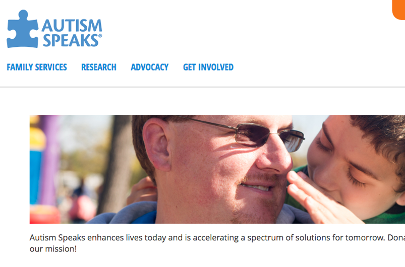
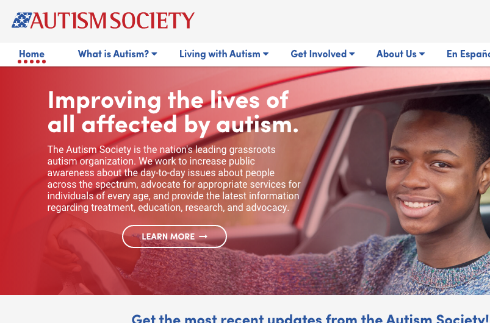
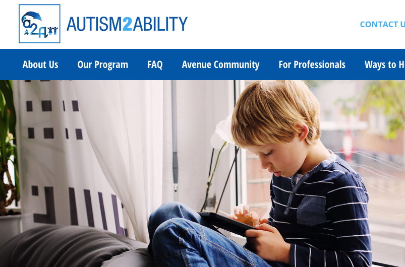

What Is Autism?
What Is Autism?
Autism, or autism spectrum disorder, refers to a range of conditions characterized by challenges with social skills, repetitive behaviors, speech and nonverbal communication, as well as by unique strengths and differences. We now know that there is not one autism but many types, caused by different combinations of genetic and environmental influences.
The term “spectrum” reflects the wide variation in challenges and strengths possessed by each person with autism.
Autism’s most-obvious signs tend to appear between 2 and 3 years of age. In some cases, it can be diagnosed as early as 18 months. Some developmental delays associated with autism can be identified and addressed even earlier. Autism Speaks urges parents with concerns to seek evaluation without delay, as early intervention can improve outcomes.

Fast Facts About Autism
- The Centers for Disease Control and Prevention (CDC) estimates autism’s prevalence as 1 in 68 children in the United States. This includes 1 in 42 boys and 1 in 189 girls.
- Around one third of people with autism remain nonverbal.
- Around one third of people with autism have an intellectual disability.
- Certain medical and mental health issues frequently accompany autism. They include gastrointestinal (GI) disorders, seizures, sleep disturbances, attention deficit and hyperactivity disorder (ADHD), anxiety and phobias.

Autism Society
The Autism Society is the nation's leading grassroots autism organization. We work to increase public awareness about the day-to-day issues about people across the spectrum, advocate for appropriate services for individuals of every age, and provide the latest information regarding treatment, education, research, and advocacy.

Autism2Ability
Autism2Ability, a 501c3 organization, has developed a results-oriented, online learning and communication resource that provides a personalized curriculum for kids with autism spectrum disorder (ASD) and resources for their families and schools. We offer support and provide direction as you do your best to raise your kids in a world of changing rules and exhausting days.
We are mindful as you brace yourselves for the challenges, recognize the differences, celebrate the uniqueness, recognize the possibilities, and savor the wins that comprise the harmonious complexity of your families.